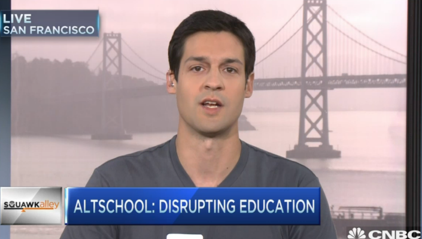

返回主页
Max Ventilla

Hungarian & French
Max Ventilla is a son of Hungarian immigrants, Ventilla grew up in Manhattan, New York.
Certified Positive Discipline Parent Educator (CPDPE)
匈牙利犹太"火星人"
现在写那些人的故事实在是太晚了一点，因为我们对他们实在是所知甚少，但他们却时时刻刻影响我们周围的世界，甚至是影响了我们每一天的生活，我们先把那些人中的一部分比较突出的人物名单列出来：
（1）西奥多.冯.卡门（Theodor von Karman，1881－1963）：他是航空和航天时代的科学奇才，空气动力学领域的宗师，钱学森曾是他得意门徒之一。
（2）乔治.赫维西（George de Hevesey，1885－1963）：他于1943年“因为使用放射性同位素作为化学示踪剂”而获诺贝尔化学奖。
（3）波拉尼（Michael Polanyi，1891－1976）：他是著名的化学家、哲学家以及政治家和经济学家，此人的家族个个都是牛人。
（4）利奥.西拉德（Leo Szilard，1898－1964）：他是原子弹工程的核心人物，还是“核和平之父”，同时他和爱因斯坦还共同有一项专利。
（5）伽玻（D.Gabor，1900－1979）：他在1971年因“发明和发展了全息照相法”而获得诺贝尔物理奖。
（6）尤金.维格纳（Eugene Wigner，1902－1995）：他于1963年“因为对原子核及基本粒子理论所做的贡献，特别是因为对称性基本原理的发现和应用”获得诺贝尔物理学奖，他的妹婿是狄拉克。
（7）约翰.冯.诺依曼（John von Neumann，1903－1957）：他被世人所知更多是“计算机之父”，是“博弈论之父”，但是实际上他是伟大的数学家，杰出的核工程领域的奇才。
（8）爱德华.特勒（Edward Teller，1908－2003）：他是“氢弹之父”，核领域的牛人。
（9）保罗.埃尔德什（Paul Erdos，1913－1996）：他被称为“当代罕见的数学奇才”。
（10）约翰.豪尔绍尼（John C.Harsanyi，1920-2000）：他于1994年获诺贝尔经济学奖。
上面这群人有着一个共同的特征：
（A）他们都是一群匈牙利人
（B）他们是犹太人
（C）他们集中出生在1870到1920年之间
（D）他们中的多数人后来都离开了匈牙利。
对这个巧合，最出名的言论来自德国著名犹太人物理学家豪特曼斯（Fritz Houtermans，1900－1966）（豪特曼斯对自己是一个犹太人从不感到自卑和苦恼，他常常幽默而骄傲地对人说：“当你们的祖先还生活在森林里的时候，我的祖先已经在制造假支票了！”）
他认为：对于小小的匈牙利出现了这么多震憾世界、建立了卓越功勋的犹太科学家，是因为这些匈牙利犹太人并不是地球上的人，而是“从火星来到地球上的来访者”。他们到地球后决定冒充匈牙利人。为什么要冒充匈牙利人呢？因为他们从火星来到地球讲地球上的话时，不免带有火星人的口音，由此可能会带来危险；幸好匈牙利人在讲任何外语时，总会带上匈牙利的地方口音；而且，匈牙利的卓越天才们几乎全都移居国外，散布世界各地。因此这群“火星人”觉得冒充匈牙利人最安全，最不容易被人识破。
英国私立高中课程
正面管教（PD）应用于自闭症（Autism）儿童
version:1.0; jobnet@188.com © retter2012.com